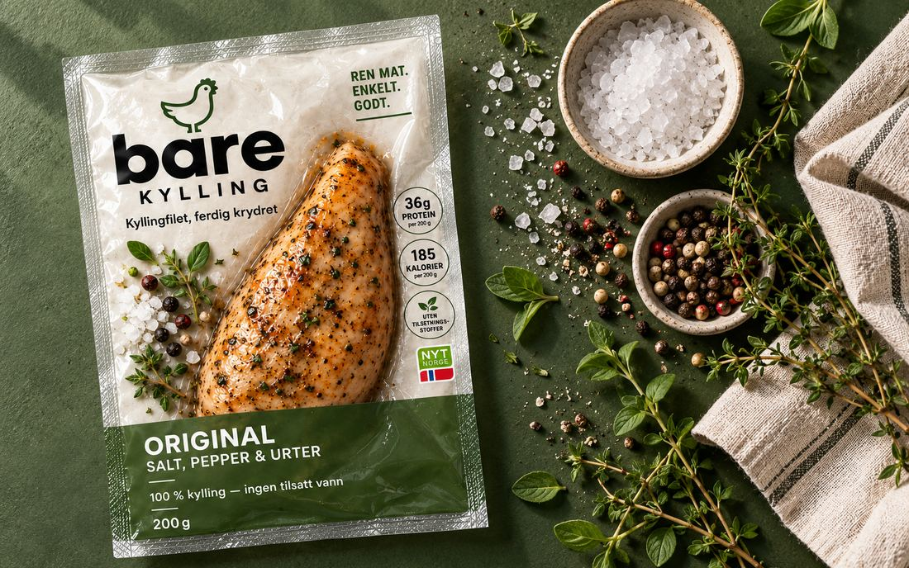
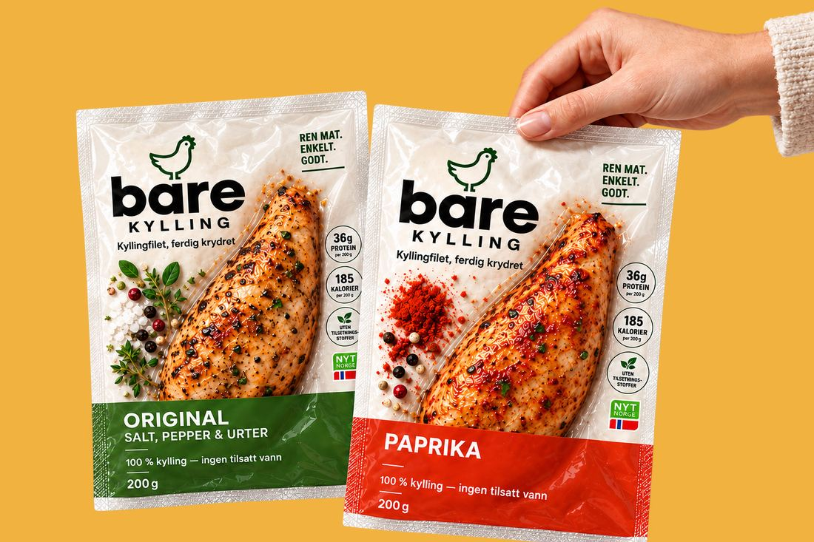
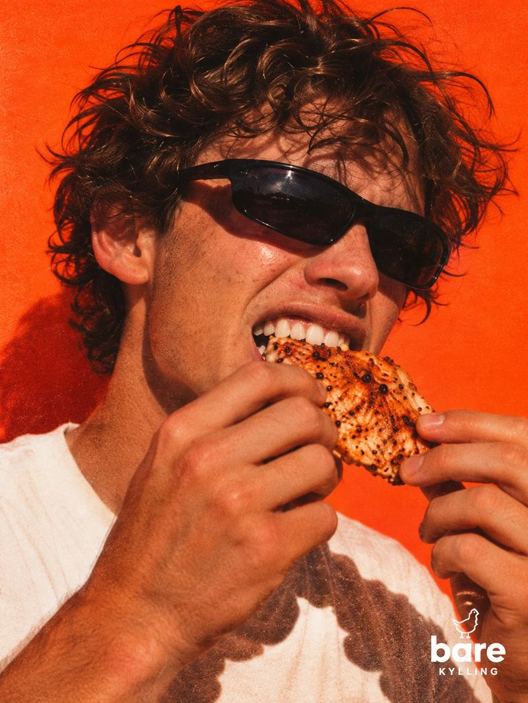
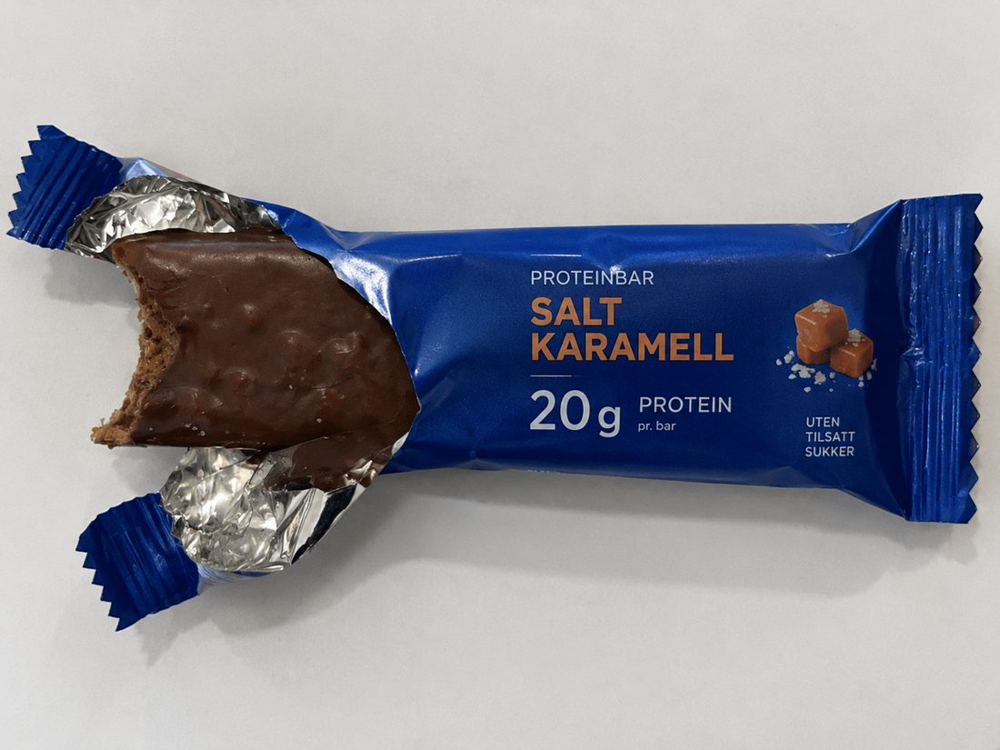
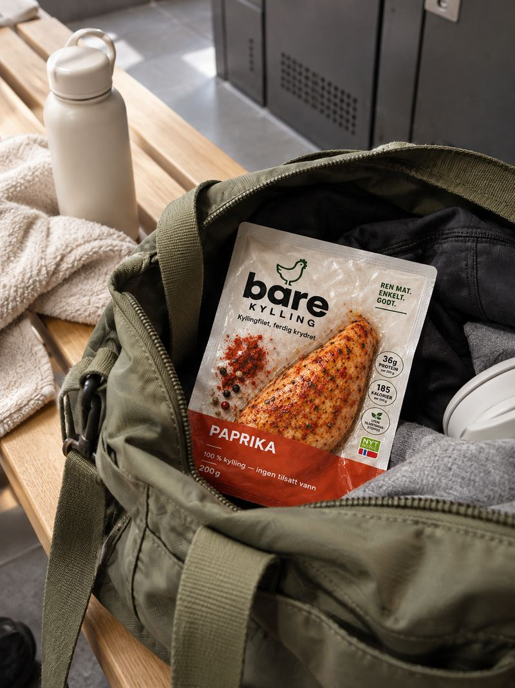
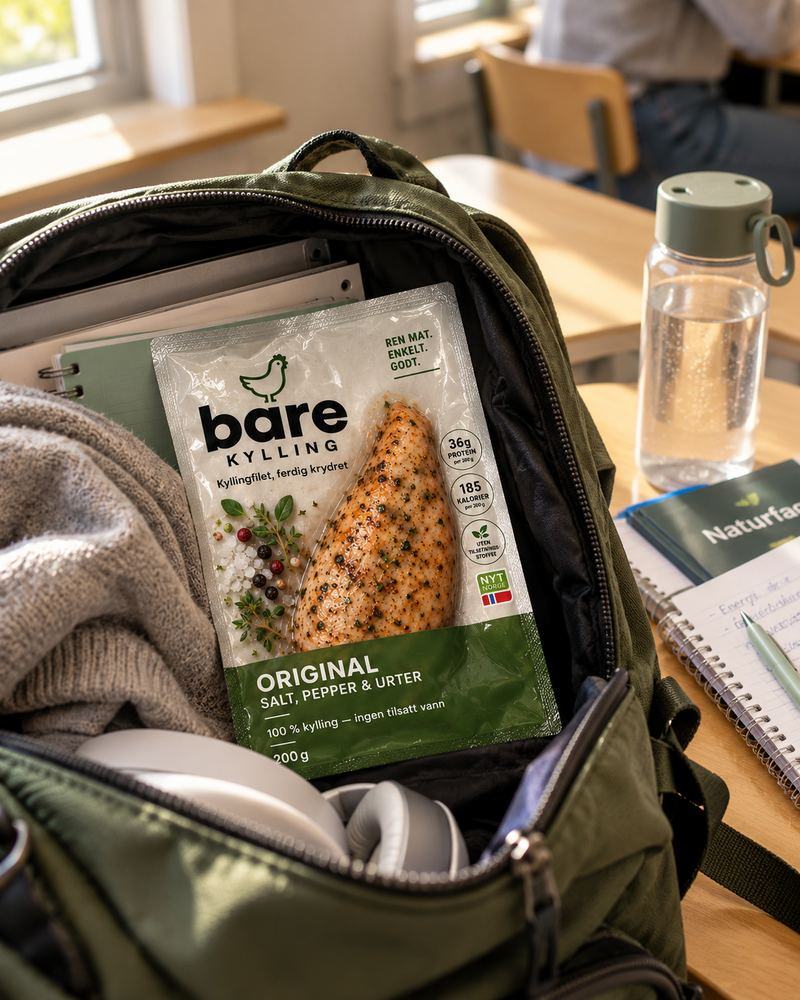
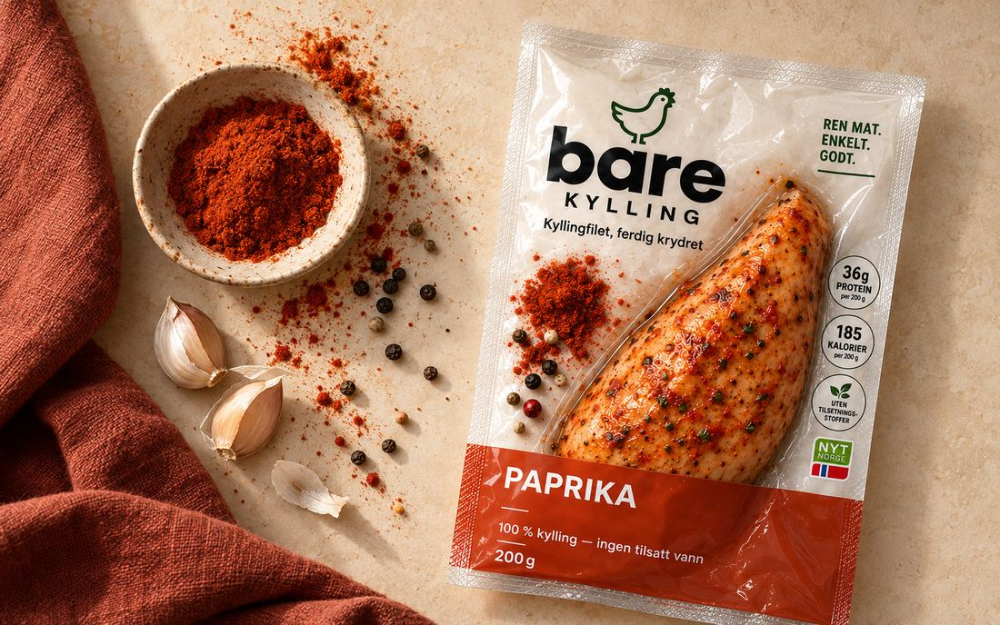
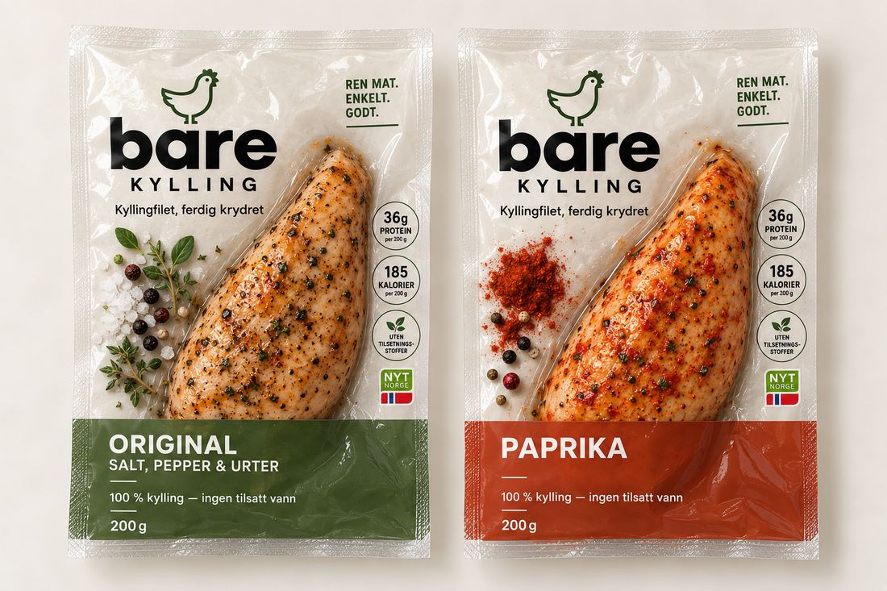

Original
Salt, pepper & urter
Den klassiske. Salt, pepper og urter som lar kyllingen smake kylling.
- Salt
- Pepper
- Urter
Ferdigstekt kylling · to smaker
Ekte kylling, stekt og krydret på forhånd. Åpne pakken, spis, fortsett dagen.


Hva du får
200 g ekte kyllingfilet i hver pakke – for travle folk som vil spise ordentlig, også når dagen går fort.
Ingen pulver, ingen shake – bare kyllingfilet og krydder du kjenner igjen.
Et helt stykke kyllingfilet på 200 g – et ordentlig mellommåltid i stedet for enda en snack.
Kyllingfilet er naturlig rik på protein, og protein bidrar til å øke og opprettholde muskelmassen.
Dropp matboksene: klar på null minutter, så det er lett å holde rytmen – også på travle dager.
Problemet
Når du trenger noe mettende mellom måltidene, blir det fort en bar, en shake eller et pulver. De har sin plass – men noen ganger vil du bare ha mat.
Trykk på noe i sekken.

Baksiden av en pakke Bare Kylling:
Ingredienser
Kyllingfilet og krydder.
Full ingrediensliste med mengder kommer når resepten er låst.
Ferdigstekt200 g
En vanlig proteinbar.
Ekte mat. Ekte protein.
Bare Kylling er kyllingfilet som er stekt og krydret før den pakkes. Like lett å ta med som en bar – bare laget av kylling.
Sammenlign
Fire vanlige valg når du trenger noe mettende og ikke har tid til å lage mat.
| Kriterium | Bare Kylling | Proteinbar | Ferdigmiddag | Takeaway |
|---|---|---|---|---|
| Hva det er | Kyllingfilet med krydder | En bar – innholdet varierer | En porsjonsrett | Mat fra en restaurant |
| Protein per porsjon | Under arbeid i lab-en | Varierer – se pakken | Varierer – se pakken | Varierer |
| Kalorier per porsjon | Under arbeid i lab-en | Varierer – se pakken | Varierer – se pakken | Varierer |
| Tilberedning | Ingen – ferdigstekt | Ingen | Må som regel varmes | Bestilling og ventetid |
| Kan varmes | Ja – i mikrobølgeovn | Ikke aktuelt | Ja | Ja |
| Kan spises kald | Ja | Ja | Som regel ikke | Varierer |
| Tar liten plass i sekken | Ja – flat pakke | Ja | Nei – skål eller brett | Nei |
Proteinbarer, ferdigretter og takeaway varierer mye – sjekk næringsdeklarasjonen på det konkrete produktet. Tallene for Bare Kylling publiseres når næringsanalysen er ferdig.
Derfor
Øyeblikk 1 / 6
Kjøleskapet
Klar emballasje, så du ser kyllingfileten før du åpner den.
Sekken pakkes
Flat pakke som glir ned i sekken, treningsbagen eller vesken.
Friminutt
Ingen bestikk, ingen tallerken og ingen oppvask etterpå.
Lunsj på farten
Laget for å smake godt rett fra pakken – eller varm den i mikroen.
Etter trening
Hele stykker kyllingfilet med krydder – ikke pulver, ikke bar.
Sen kveld
Stekt og krydret før den pakkes, så du slipper å lage noe.
Når som helst
Etter trening, i friminuttet eller mellom to møter. Ingen panne, ingen matboks – bare åpne og spis.


Og på jobb, på bussen og på vei hjem.
Smakene
Den samme ferdigstekte kyllingfileten, krydret på to måter.

Salt, pepper & urter
Den klassiske. Salt, pepper og urter som lar kyllingen smake kylling.

Mild & rund
Rund og mild. Søt paprika gir farge og fylde uten å ta over.

Kvalitet
Emballasjen er klar, så du ser kyllingfileten før du åpner den.
Kyllingfilet og krydder. Den fullstendige ingredienslisten publiseres når resepten er låst.
Fra en kylling – så mye kan vi love. Vi holder på å spikre leverandøren, og opprinnelseslandet står her før lansering.
Under arbeidVi jobber med produksjonen nå. Hvordan kyllingen lages og kontrolleres, forteller vi her når første batch er i gang.
Under arbeidNæringsinnhold
Åpne en smak for å se næringsdeklarasjon, ingredienser og allergener.
| Næringsinnhold | Per 100 g | Per pakke (200 g) |
|---|---|---|
| Energi | – | – |
| Fett | – | – |
| hvorav mettede fettsyrer | – | – |
| Karbohydrat | – | – |
| hvorav sukkerarter | – | – |
| Protein | – | – |
| Salt | – | – |
Lab-en jobber med saken. Tallene kommer her så snart næringsanalysen er ferdig.
Kyllingfilet krydret med salt, pepper og urter. Den fullstendige ingredienslisten med mengder publiseres når resepten er låst.
Under arbeid. Allergener oppgis her og på pakken når resepten er låst.
| Næringsinnhold | Per 100 g | Per pakke (200 g) |
|---|---|---|
| Energi | – | – |
| Fett | – | – |
| hvorav mettede fettsyrer | – | – |
| Karbohydrat | – | – |
| hvorav sukkerarter | – | – |
| Protein | – | – |
| Salt | – | – |
Lab-en jobber med saken. Tallene kommer her så snart næringsanalysen er ferdig.
Kyllingfilet krydret med søt paprika. Den fullstendige ingredienslisten med mengder publiseres når resepten er låst.
Under arbeid. Allergener oppgis her og på pakken når resepten er låst.
Spørsmål og svar
Nei. Den er ferdigstekt og klar til å spises rett fra pakken. Vil du ha den varm, kan du varme den i mikrobølgeovnen.
Godt spørsmål – det er akkurat det vi tester nå. Holdbarheten trykkes på pakken, og vi legger den ut her så snart den er fastsatt.
Vi jobber med saken sammen med produksjonen. Oppbevaringsanvisningen står her og på pakken før lansering.
Fra en kylling – så mye kan vi love. Spøk til side: vi holder på å spikre leverandøren og oppgir opprinnelsesland her så snart avtalen er på plass.
Kyllingfilet er naturlig rik på protein, men det nøyaktige tallet får du når lab-en er ferdig med næringsanalysen. Da står det i næringsdeklarasjonen.
Filosofer har kranglet om det i årtusener. Vi har valgt side: kyllingen. Egget får lage sin egen nettside.
Produktet er ikke i salg ennå. Sett deg på lista, så får du beskjed så snart vi vet når og hvor.
Kommer snart
Første batch er under arbeid. Legg igjen e-posten din, så får du én beskjed når Bare Kylling er klar – og hvor du får tak i den.
Vi maser ikke. Vi sier bare fra.